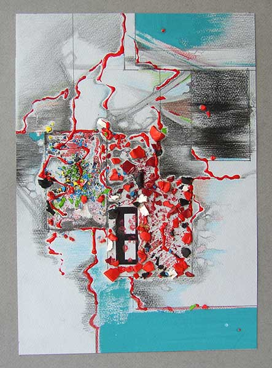

Задание.
Визуализация различных эмоционально-психологических состояний человека или стадий жизненных процессов при помощи цвета и неизобразительной формы. Возможно также в качестве формы использовать мотив натюрморта.
Авторы работ: Сакович Е., Лазарчик Г., Муравьев Е., Шугар Т., Ломако Л.
Просмотр 15 июня 2005 г.
Закладка города
Его расцвет

Разрушение

Гибель города
Радость
Отрешенность
Скука
Тоска